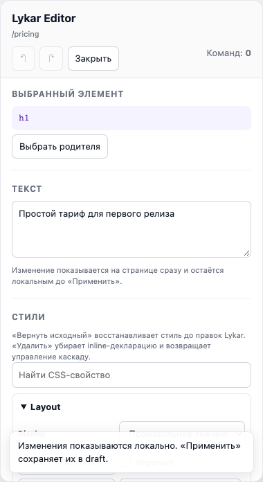
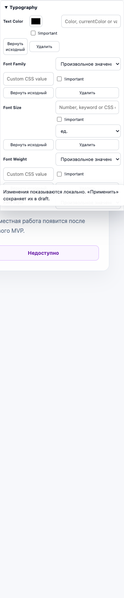
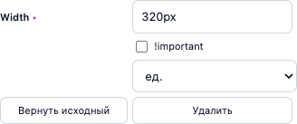
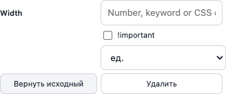

S2 — полный редактор стилей
Приёмка S2-06.1…S2-06.8 · 23 сентября 2026 · production SDK script и ESM
PASS · 8/8 задач
Style Manager встроен в активный SDK editor. Основные CSS-группы доступны через специализированные нативные поля; поддерживаемые браузером свойства вне каталога и custom properties — через Advanced. Изменения проходят preview, undo/redo, сохранение draft, reload, release и просмотр по share-ссылке.
Покрытие
| Группа | Проверенное поведение | Evidence |
|---|---|---|
| Layout / Size / Space / Position | display select, width number+unit, linked padding как одна операция, margin, position; Escape, reset, undo/redo. | script + ESM, Chromium / Firefox / WebKit |
| Typography / Borders | color swatch + raw var(), font, letter-spacing с исходным !important, углы radius. | browser matrix + unit |
| Background / Effects | Gradient + data URL + цвет сохраняются при смене размера второго слоя; цвет второй тени не меняет первую, offsets и inset; transform/transition удерживают порядок функций и запятые в easing. | browser matrix + codec tests |
| Advanced / SVG | Произвольный hyphens, case-sensitive CSS variable, clamp(), grid, animation, поддерживаемый vendor prefix и SVG stroke; invalid input не создаёт команду. | browser matrix + protocol tests |
| История и сохранение | 50 color input events дают один undo step; linked spacing сохраняется и атомарно отменяется после reload; при host drift откат блокируется. Lost response и две вкладки не дублируют операции. | unit + browser + HTTP regression |
Состояния интерфейса




Размер и доставка
Visitor entry
77 754 B raw · 22 741 B gzip · 20 096 B Brotli. В source map нет editor UI; существующий лимит SDK 80 000/25 000 B выполнен.Lazy editor
172 928 B raw · 45 933 B gzip · 39 033 B Brotli. Это весь editor asset, включая core, а не только стили.Standalone UI probe
59 422 B raw · 15 507 B gzip · 13 774 B Brotli. Цель ≤20 480 B gzip выполнена. Новых production UI/vendor зависимостей нет.От воспроизведённого S1 commit 70cd83c visitor entry вырос на 10 008 B gzip, полный lazy editor — на 29 880 B gzip. Это суммарный прирост S2 core и UI; приписывать его целиком Style Manager некорректно. UI-related прирост visitor entry равен 0 по составу bundle: editor UI/bridge modules в нём отсутствуют. Asset manifest содержит 6 логических имен и 3 уникальных payload, все byte counts и SHA-256 совпадают.
Метод: Node 22.23.1, macOS arm64, gzip level 9, Brotli quality 11. Baseline собирается node scripts/build-style-baseline.mjs из S1 revision тем же minifier/toolchain; затем node scripts/style-editor-budget.mjs --baseline-dir .lykar/style-baseline. Полный машинный аудит содержит hashes, dependency graph и все asset sizes. Production npm consumer и SSR import проверены отдельным fixture.
На fixture из 1 000 DOM nodes измерены 30 событий после 5 прогревов: p95 выбора / input-to-preview — Chromium 17.2 / 33.9 ms, Firefox 13 / 18 ms, WebKit 17 / 34 ms. Все ниже цели 50 ms. Native visitor не запрашивает editor UI.
Ограничения
- Редактор меняет inline CSS declarations выбранного доступного DOM/SVG target. CSS selectors, pseudo states, media rules, keyframes и breakpoints — отдельные rule contexts.
- Closed shadow roots, чужие iframe и недоступные cross-origin stylesheets не инспектируются. Диагностика каскада сообщает об отсутствии видимого эффекта, но не называет неподтверждённый winning rule.
- React/Vue reconciliation и cooperative framework adapters относятся к S4; browser acceptance здесь охватывает static/SSR host в Chromium, Firefox и WebKit.